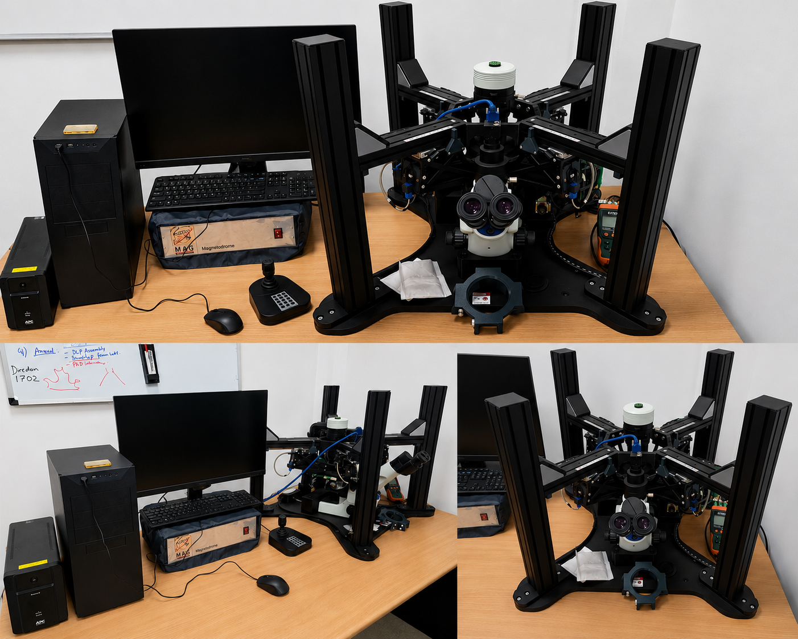

Company: Setup (Mag-Systems)
Country: Germany
The Magnetodrome® is a 3-axis magnetic micromanipulation system integrated with an Olympus CKX53 inverted microscope. It enables precise, non-contact manipulation of micro- and nano-scale magnetic objects in biological and physical science research. Its joystick-controlled interface, real-time imaging, and trajectory tracking make it ideal for studying cell mechanics, targeted drug delivery, lab-on-chip systems, and active matter physics.
Location of Facility:
Central Research Facility
Indian Institute of Technology Delhi
Hauz Khas, New Delhi – 110016
Facility Coordinator:
Prof. Sarvesh Kumar Srivastava,
The Gut Engineering Lab (3Mslab), CBME,
IIT Delhi, Hauz Khas, New Delhi – 110016
Office number: 011-2659-6314
Email Address: sksr@iitd.ac.in
Operator: Dr. Souvik Ghosh
Project Research Scientist III
The Gut Engineering Lab, IIT Delhi